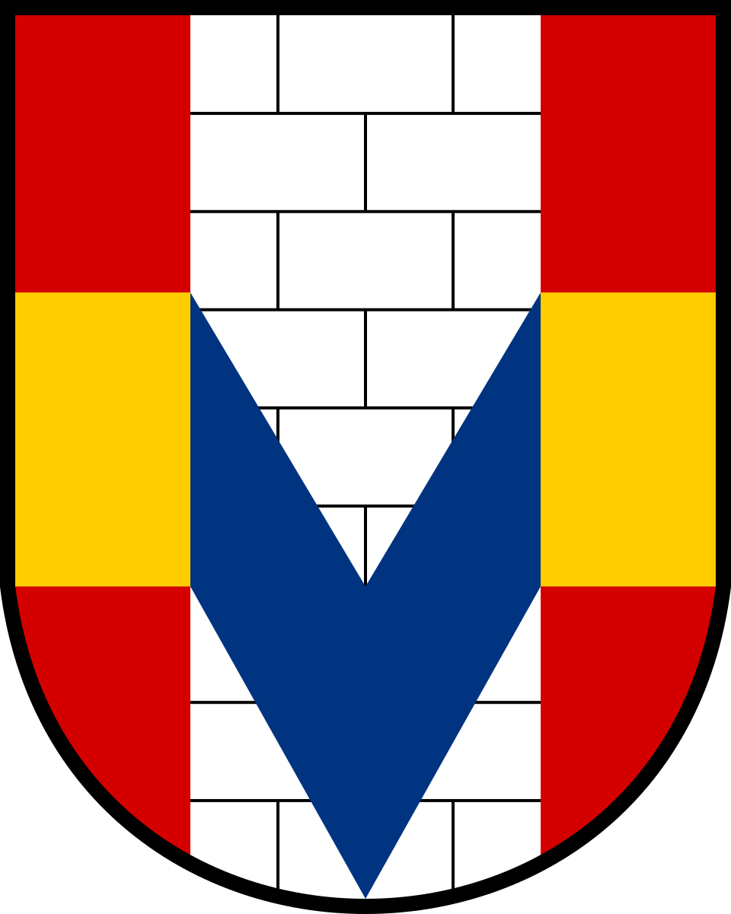

Větrný park Vojtěchov – VR
Klasická verze · A-FrameVizualizace větrného parku – statické a animované pohledy
Statické pohledy
Animované pohledy
Funguje i bez headsetu – na počítači se rozhlížejte tažením myší (Esc = zpět do menu). V headsetu přepínáte mezi pohledy nakloněním páčky ovladače doleva / doprava. Na Questu doporučujeme výchozí verzi s WebXR Layers.
← výchozí verze (WebXR Layers)